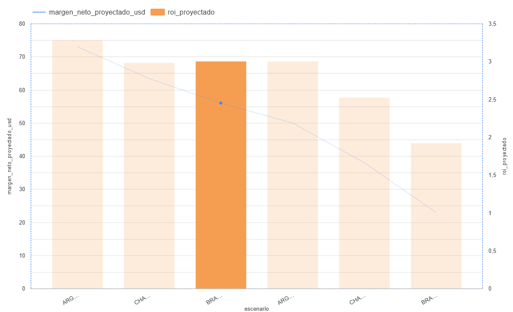

ESTRATEGIA COMERCIAL & BIOTECNOLOGÍA 2026/27
Agro-Analytics Mercosur
Modelado Predictivo y Retorno de Inversión (ROI) de Bioinsumos bajo Estrés Climático Severo
Autor: Héctor García
Perfil Académico: Técnico Agropecuario & Estudiante Avanzado de Biotecnología
Enfoque Científico-Comercial: Modelado de datos macroeconómicos cruzados con respuestas metabólicas y fisiológicas vegetales para la mitigación del riesgo predictivo.
🌐 Nota: A partir de la página 15 comienza la versión en Portugués (Versão em Português).
Fundamentación Estratégica
Objetivos del Modelo Predictivo Agro-Analytics
El proyecto surge de la necesidad de transformar la variabilidad climática regional en decisiones comerciales estructuradas de bajo riesgo predictivo.
Objetivo General:
Diseñar un modelo predictivo interdisciplinario que cuantifique el impacto económico y la eficiencia financiera (ROI) del uso de inductores biológicos ante anomalías hídricas térmicas severas en el Mercosur.
Objetivos Específicos:
- Modelar la interacción suelo-planta-atmósfera bajo dinámicas logísticas y macroeconómicas variables.
- Indexar estructuras de costos variables y precios comerciales condicionados por escasez regional de oferta.
- Soportar la toma de decisiones críticas de la junta directiva corporativa mediante entornos BI interactivos.
1. El Desafío de la Variabilidad Climática
El impacto latente de "El Niño" y "La Niña" en las finanzas del productor
El rendimiento de los cultivos está directamente atado a variables biológicas y meteorológicas extremas. Los extremos hídricos severos provocan pérdidas masivas de capital si el manejo es puramente reactivo.
Escenario Húmedo (Niño): Provoca saturación de suelos, lavado de nutrientes esenciales (lixiviación) y bloqueos severos en la logística de fertilización terrestre tradicional.
Escenario Seco (Niña): Provoca estrés hídrico prolongado, senescencia celular anticipada y aborto de estructuras reproductivas, destruyendo el techo productivo.
2. Enfoque e Integración de Datos
Fusión de Ciencias Agrarias, Biotecnología y Ciencia de Datos
Este modelo quiebra el silo tradicional que separa la agronomía de las finanzas corporativas. No analizamos la biología de forma aislada; la traducimos en Márgenes Netos Indexados.
- Ciencias Agrarias: Análisis de dinámicas agronómicas en zonas estratégicas. Extracción de registros meteorológicos históricos satelitales (NASA POWER) y costos comerciales reales.
- Biotecnología Vegetal: Evaluación metabólica y fisiológica de inductores foliares, solubilizadores de fósforo y fijadores biológicos de nitrógeno que mitigan el riesgo predictivo.
- Ciencia de Datos: Modelado matemático en bases de datos relacionales integrando series macroeconómicas oficiales y registros biológicos de respuestas celulares vegetales.
3. Arquitectura del Motor de Datos
Procesamiento robusto mediante PostgreSQL
Para garantizar la escalabilidad de la estrategia comercial, los datos crudos del Mercosur fueron procesados en un motor de base de datos relacional robusto.
-- Uso de Subconsultas Avanzadas (CTEs)
WITH escenario_consolidado AS (
SELECT escenario, region, (rendimiento * precio_venta) AS ingresos_brutos...
) SELECT *, (ingresos_brutos - costos_totales) AS margen_neto_usd_ha FROM ...
La lógica SQL permitió unificar los costos operativos logísticos variables e indexar los precios comerciales por escasez regional automáticamente.
4. Inteligencia de Negocios Interactiva
Arquitectura de Doble Eje en Looker Studio
El modelo soluciona las escalas incompatibles mediante un diseño de Doble Eje Y. El eje izquierdo audita métricas monetarias (USD/ha) y el derecho representa el multiplicador de eficiencia pura del ROI.

Para evitar bloqueos de seguridad del navegador y explorar el informe completo con filtros por región y comportamiento dinámico, abra el panel en su servidor oficial:
📊 Abrir Dashboard Interactivo 🚀
Haciendo clic en el botón naranja se abrirá el cuadro de mando en tiempo real en una pestaña nueva.
5. El Alcance Geográfico (Mercosur)
Tres ecorregiones agroclimáticas estratégicas analizadas
El modelo predictivo para la campaña 2026/27 corre sobre tres nodos productivos con realidades edáficas y logísticas completamente distintas:
Zona Núcleo (Pergamino, ARG)
Suelos de alta productividad, óptima estructura y excelente capacidad de retención hídrica. Alta respuesta al nitrógeno foliar.
Región Chaco (Chacabuco, ARG)
Ambiente de alta evapotranspiración y riesgo térmico elevado durante el período crítico.
Brasil Cerrado (Mato Grosso, BR)
Suelos arenosos con alta lixiviación de nutrientes bajo lluvias tropicales continuas.
6. Logística Predictiva y Gestión de Riesgo
Modelado de costos de contingencia climática en Zona Núcleo
El análisis predictivo va más allá del lote; contempla el colapso de la infraestructura regional. El modelo contempla que ante un escenario de Niño Extremo, el tránsito terrestre se vuelve inviable.
Impacto en Costos: El sistema activa automáticamente una alerta de contratación preventiva de Aviación Agrícola (+USD 14/ha) para la aplicación de inductores foliares.
Impacto Biológico: Esta decisión crítica defiende con éxito un potencial de +350 kg/ha al mitigar la hipoxia radicular a tiempo.
7. Escenario: Brasil Cerrado (Niño Extremo)
Saturación hídrica y lavado de nutrientes en Mato Grosso
Las lluvias torrenciales en el Cerrado lixivian los fertilizantes tradicionales. Aquí es donde la biotecnología aplicada a los suelos muestra su mayor resiliencia financiera.
- Facturación Bruta Proyectada: USD 1.440,00 / ha (Productividad de 3.600 kg/ha x Precio USD 0,40/kg).
- Costo Total Computado: USD 1.364,00 / ha (Incluye el costo operativo logístico por exceso de humedad de USD 14,00 / ha).
- Resultado Directo: Margen Neto de USD 76,00 / ha y un ROI de 3,28x sobre el paquete biológico aplicado.
8. Escenario: Brasil Cerrado (Niña / Seco)
Estrategia defensiva ante estrés hídrico severo
Cuando el agua falta en el Cerrado, el rendimiento cae abruptamente, pero el mercado compensa parcialmente vía precios debido a la escasez de oferta regional.
- Facturación Bruta Proyectada: USD 903,00 / ha (Quiebre de productividad a 2.100 kg/ha x Precio valorizado de USD 0,43/kg).
- Costo Total Computado: USD 840,00 / ha (Cero costo de contingencia logística terrestre).
- Eficiencia Defensiva: Margen Neto de USD 63,00 / ha sosteniendo un ROI de 2,98x. El bioinsumo actúa protegiendo las paredes celulares de la planta.
9. Matriz Comparativa de Rendimiento Financiero
Evaluación cruzada de márgenes netos y retornos reales
| Escenario / Región |
Productividad |
Precio Base |
Margen Neto |
ROI Comercial |
| Mato Grosso (Niño) |
3.600 kg/ha |
USD 0,40 / kg |
USD 76,00 |
3,28x |
| Mato Grosso (Niña) |
2.100 kg/ha |
USD 0,43 / kg |
USD 63,00 |
2,98x |
La consistencia del ROI (superior a 2,9x en ambos extremos) demuestra la viabilidad del modelo comercial independientemente del ciclo climático dominante.
10. Conclusión Comercial: Estabilidad del Negocio
La biotecnología como un escudo financiero contracíclico
Para la junta directiva y el equipo comercial, la conclusión es contundente: La adopción de bioinsumos dejó de ser una decisión puramente ambiental para convertirse en una estrategia de cobertura financiera.
Desacople del Riesgo Absoluto: El modelo prueba que el uso de solubilizadores de fósforo y protectores celulares mantiene el ROI estable en un piso de 2,98x en la peor seca y sube a 3,28x en el peor exceso hídrico. Logramos estabilizar los retornos en ambientes de alta volatilidad macroeconómica y climática.
11. Recomendaciones de Inversión Corporativa
Plan de acción comercial para el posicionamiento regional
Para maximizar la captura de valor en la campaña Mercosur 2026/27, se recomiendan tres acciones de mercado inmediatas:
- Pre-contratación de Capacidad Aerotransportada: Firmar acuerdos de logística en Zona Núcleo antes del inicio de campaña bajo alertas de "Niño", asegurando la tarifa de USD 14/ha y evitando sobrecostos de mercado spot.
- Foco Comercial en Suelos Degradados: Direccionar la fuerza de ventas hacia regiones con suelos arenosos (Cerrado), donde el multiplicador de valor biológico es óptimo frente a la lixiviación.
PORTAFOLIO PROFESIONAL
¿Hablamos de Datos y Agronegocios?
Héctor García • Técnico Agropecuario & Estudiante Avanzado de Biotecnología
Estoy enfocado en transformar la complejidad de los datos de campo, los registros meteorológicos y las métricas e interacciones biológicas celulares en dashboards de alta fidelidad y modelos comerciales predictivos que aseguren rentabilidad en el sector Agrotech.
ESTRATÉGIA COMERCIAL & BIOTECNOLOGIA 2026/27
Agro-Analytics Mercosur
Modelagem Preditiva e Retorno sobre o Investimento (ROI) de Bioinsumos sob Estresse Climático Severo
Autor: Héctor García
Perfil Acadêmico: Técnico Agropecuário & Estudante Avançado de Biotecnologia
Abordagem Científico-Comercial: Modelagem de dados macroeconômicos cruzados com respostas metabólicas e fisiológicas vegetais para a mitigação do risco preditivo.
Fundamentação Estratégica
Objetivos do Modelo Preditivo Agro-Analytics
O projeto surge da necessidade de transformar a variabilidade climática regional em decisões comerciais estruturadas de baixo risco preditivo.
Objetivo Geral:
Desenhar um modelo preditivo interdisciplinar que quantifique o impacto econômico e a eficiência financeira (ROI) do uso de indutores biológicos diante de anomalias hídricas térmicas severas no Mercosul.
Objetivos Específicos:
- Modelar a interação solo-planta-atmosfera sob dinâmicas logísticas e macroeconômicas variáveis.
- Indexar estruturas de custos variáveis e preços comerciais condicionados pela escassez regional de oferta.
- Suportar a tomada de decisões críticas da diretoria corporativa por meio de ambientes BI interativos.
1. O Desafio da Variabilidade Climática
O impacto latente de "El Niño" e "La Niña" nas finanças do produtor
O rendimento das culturas está diretamente atrelado a variáveis biológicas e meteorológicas extremas. Os extremos hídricos severos causam perdas massivas de capital se o manejo for puramente reativo.
Cenário Úmido (Niño): Provoca saturação dos solos, lavagem de nutrientes essenciais (lixiviação) e bloqueios severos na logística de fertilização terrestre tradicional.
Cenário Seco (Niña): Provoca estresse hídrico prolongado, senescência celular antecipada e aborto de estruturas reprodutivas, destruindo o teto produtivo.
2. Abordagem e Integração de Dados
Fusão de Ciências Agrárias, Biotecnologia e Ciência de Dados
Este modelo quebra o silo tradicional que separa a agronomia das finanças corporativas. Não analisamos a biologia de forma isolada; nós a traduzimos em Margens Líquidas Indexadas.
- Ciências Agrárias: Análise das dinâmicas agronômicas em regiões estratégicas. Extração de registros meteorológicos históricos satelitais (NASA POWER) e custos comerciais reais.
- Biotecnologia Vegetal: Avaliação metabólica e fisiológica de indutores foliares, solubilizadores de fósforo e fixadores biológicos de nitrogênio que mitigam o risco preditivo.
- Ciência de Dados: Modelagem matemática em bancos de dados relacionais integrando séries macroeconômicas oficiais e registros biológicos de respostas celulares vegetais.
3. Arquitetura do Motor de Dados
Processamento robusto via PostgreSQL
Para garantir a escalabilidade da estratégia comercial, os dados brutos do Mercosul foram processados em um motor de banco de dados relacional robusto.
-- Uso de Subconsultas Avanzadas (CTEs)
WITH cenario_consolidado AS (
SELECT cenario, region, (rendimiento * preco_venda) AS faturamento_bruto...
) SELECT *, (faturamento_bruto - custos_totais) AS margem_liquida_usd_ha FROM ...
A lógica SQL permitiu unificar os custos operacionais logísticos variáveis e indexar os preços comerciais por escassez regional automaticamente.
4. Inteligência de Negócios Interativa
Arquitetura de Eixo Duplo no Looker Studio
O modelo resolve escalas incompatíveis através de um design analítico de Eixo Y Duplo, permitindo à diretoria corporativa cruzar o dinheiro capturado frente à eficiência pura de cada dólar.
Para explorar as métricas de faturamento e os multiplicadores de ROI de forma interativa e com filtros dinâmicos de safra, acesse o painel oficial:
📊 Abrir Dashboard Interactivo 🚀
Ao clicar no botão laranja, o painel interativo será aberto em uma nova aba do navegador.
5. O Alcance Geográfico (Mercosul)
Três ecorregiões agroclimáticas estratégicas analisadas
O modelo preditivo para a safra 2026/27 roda sobre três nós produtivos con realidades edáficas e logísticas completamente distintas:
Zona Núcleo (Pergamino, ARG)
Solos de alta produtividade, ótima estrutura e excelente capacidade de retenção hídrica. Alta resposta ao nitrogênio foliar.
Região Chaco (Chacabuco, ARG)
Ambiente de alta evapotranspiración e risco térmico elevado durante o período crítico.
Brasil Cerrado (Mato Grosso, BR)
Solos arenosos com alta lixivação de nutrientes sob chuvas tropicais contínuas.
6. Logística Preditiva e Gestão de Risco
Modelagem de custos de contingência climática na Zona Núcleo
A análise preditiva vai além do talhão; contempla o colapso da infraestrutura regional. O modelo prevê que diante de um cenário de Niño Extremo, o trânsito terrestre torna-se inviável.
Impacto nos Custos: O sistema activa automaticamente um alerta de contratação preventiva de Aviação Agrícola (+USD 14/ha) para la aplicação de indutores foliares.
Impacto Biológico: Esta decisão crítica defende com sucesso um potential de +350 kg/ha ao mitigar a hipóxia radicular a tempo.
7. Cenário: Brasil Cerrado (Niño Extremo)
Saturação hídrica e lavagem de nutrientes em Mato Grosso
As chuvas torrenciais no Cerrado lixiviam os fertilizantes tradicionais. É aqui que a biotecnologia aplicada aos solos mostra sua maior resiliência financeira.
- Faturamento Bruto Projetado: USD 1.440,00 / ha (Produtividade de 3.600 kg/ha x Preço USD 0,40/kg).
- Custo Total Computado: USD 1.364,00 / ha (Inclui o custo operacional logístico por excesso de umidade de USD 14,00 / ha).
- Resultado Directo: Margem Líquida de USD 76,00 / ha e um ROI de 3,28x sobre o pacote biológico aplicado.
8. Cenário: Brasil Cerrado (Niña / Seco)
Estratégia defensiva diante de estresse hídrico severo
Quando a água falta no Cerrado, a produtividade cai abruptamente, mas o mercado compensa parcialmente via preços devido à escassez de oferta regional.
- Faturamento Bruto Projetado: USD 903,00 / ha (Quebra de produtividade para 2.100 kg/ha x Preço valorizado de USD 0,43/kg).
- Custo Total Computado: USD 840,00 / ha (Zero custo de contingência logística terrestre).
- Eficiência Defensiva: Margem Líquida de USD 63,00 / ha sustentando um ROI de 2,98x. O bioinsumo atua protegendo las paredes celulares da planta.
9. Matriz Comparativa de Desempenho Financeiro
Avaliação cruzada de margens líquidas e retornos reais
| Cenário / Região |
Produtividade |
Preço Base |
Margem Líquida |
ROI Comercial |
| Mato Grosso (Niño) |
3.600 kg/ha |
USD 0,40 / kg |
USD 76,00 |
3,28x |
| Mato Grosso (Niña) |
2.100 kg/ha |
USD 0,43 / kg |
USD 63,00 |
2,98x |
A consistência do ROI (superior a 2,9x em ambos os extremos) demonstra a viabilidade do modelo comercial independientemente del ciclo climático dominante.
10. Conclusão Comercial: Estabilidade do Negócio
A biotecnologia como um escudo financeiro contracíclico
Para a diretoria e a equipe comercial, a conclusão é contundente: A adoção de bioinsumos deixou de ser uma decisão puramente ambiental para se tornar uma estratégia de proteção financeira.
Desacoplamento do Risco Absoluto: O modelo prova que o uso de solubilizadores de fósforo e protetores celulares mantém o ROI estável em um piso de 2,98x na pior seca e sobe para 3,28x no pior excesso hídrico. Conseguimos estabilizar os retornos em ambientes de alta volatilidade macroeconômica e climática.
11. Recomendações de Investimento Corporativo
Plano de ação comercial para o posicionamento regional
Para maximizar a captura de valor na safra Mercosul 2026/27, recomendam-se três ações de mercado imediatas:
- Pré-contratação de Capacidad Aerotransportada: Firmar acordos de logística na Zona Núcleo antes do início da safra sob alertas de "Niño", garantindo a tarifa de USD 14/ha e evitando sobrecostos no mercado spot.
- Foco Comercial em Solos Degradados: Direcionar a força de vendas para regiões com solos arenosos (Cerrado), onde o multiplicador de valor biológico é ideal diante da lixiviação.
PORTFÓLIO PROFISSIONAL
Vamos falar de Dados e Agronegócios?
Héctor García • Técnico Agropecuário & Estudante Avançado de Biotecnologia
Estou focado em transformar a complexidade dos dados de campo, registros meteorológicos e métricas biológicas celulares em dashboards de alta fidelidade e modelos comerciais preditivos que assegurem rentabilidade no setor Agrotech.